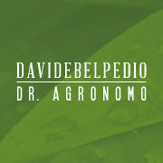

PROFILO PROFESSIONALE
Dott. Davide Belpedio
Agronomo Paesaggista
Dottore Regolarmente iscritto con il n°793 all'ordine dei Dottori Agronomi e Forestali della provincia di Salerno e dal collegio dei Periti Agrari Laureati di Salerno al n°902.
Con un approccio che unisce rigore scientifico e visione creativa, mi dedico alla valorizzazione del territorio e alla creazione di spazi verdi che migliorano la qualità della vita e rispettano l'ecosistema.
Agronomia
Paesaggistica
Consulenza Tecnica